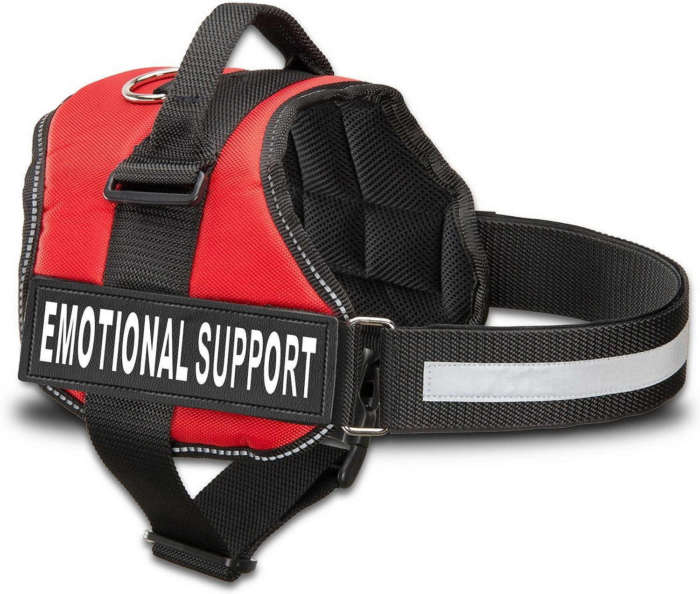

What is an ESA
An emotional support animal, also referred to as an ESA, is a designated companion animal that provides comfort and support to a person dealing with a diagnosed emotional, mental, or psychological disability. An ESA can also be called an assistance animal or support animal, and helps its owner or handler manage the symptoms of their mental or emotional condition. To be officially categorized as an ESA, the owner and animal must have the proper documentation in the form of an ESA Letter.
The difference between ESAs and service animals
While ESAs are like service animals in some ways, there are many differences between the two. ESAs do not perform a specific task or job; instead, their purpose is to offer relief in challenging situations. Service animals help their owner complete daily tasks. Service animals undergo intense training that enables them to help with specific functions and receive special certification upon completion. Service animals are allowed anywhere their owner is. ESAs are only allowed where all animals are allowed with the exception of housing. ESAs can be any animal that does not cause harm to people or other animals and is able to behave in public.
Where are ESAs allowed
ESAs are allowed anywhere a normal pet would be allowed. Unlike service animals an ESA is not allowed in public spaces that don't allow animals. ESAs are for providing comfort in your living condition that is why they are not allowed in spaces that other animals are not allowed. People who always have a need for an animal with them usually have a Psychiatric Service Dog. A business owner is alowed to ask an ESA to leave their property at anytime with the exception of housing.